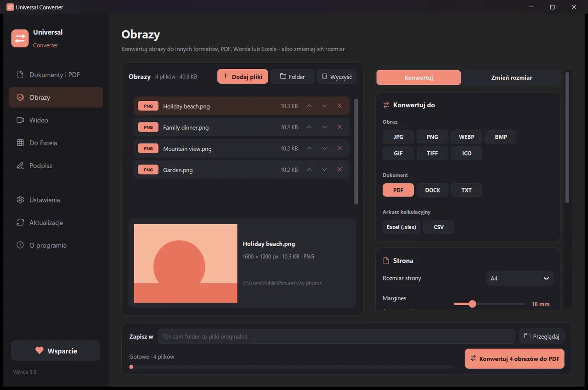
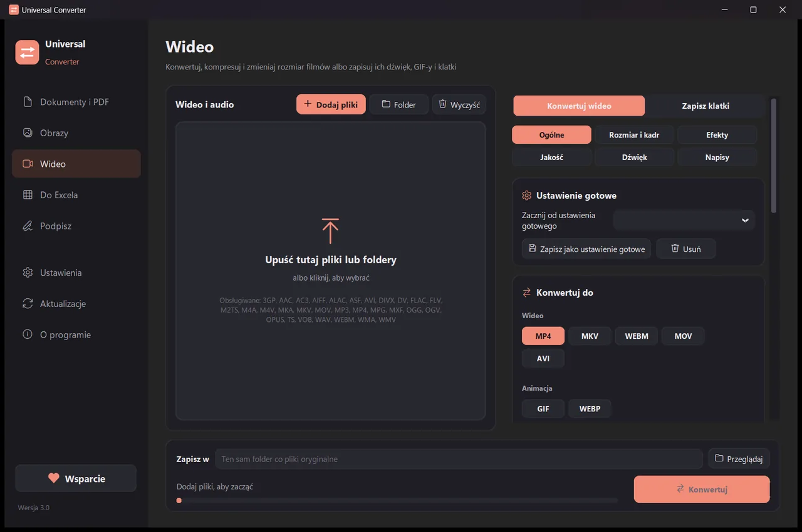
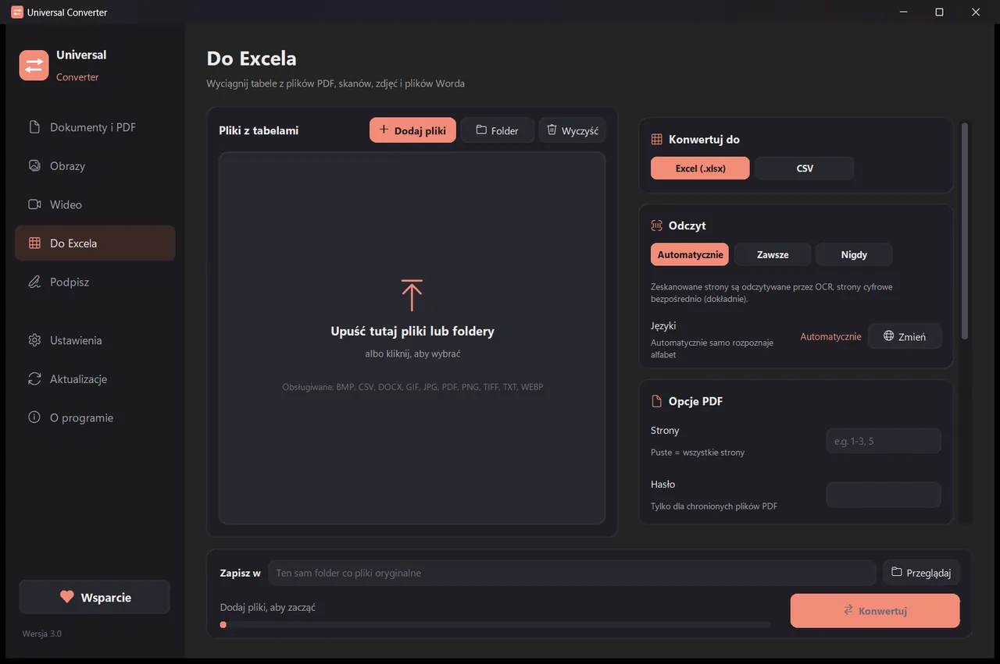
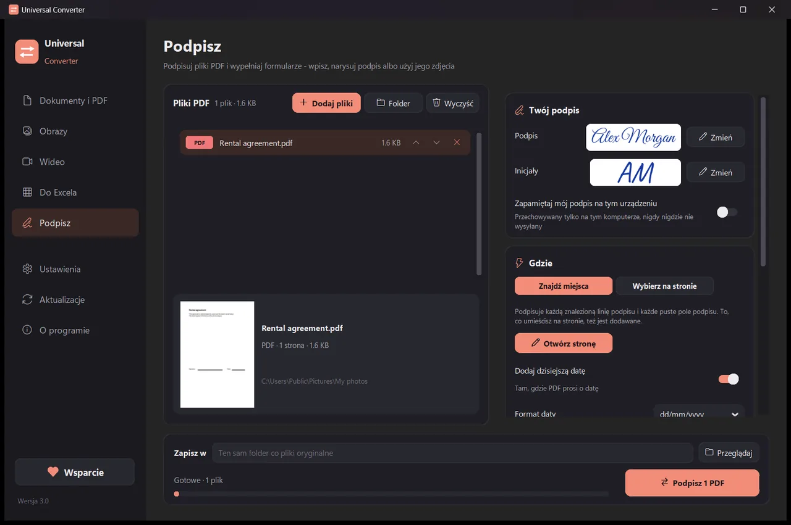

Konwertuj pliki na własnym urządzeniu
Obrazy, dokumenty, filmy i dźwięk, pliki PDF i tabele do Excela - wszystko w jednej aplikacji. Nic nie jest wysyłane: Twoje pliki nigdy nie opuszczają urządzenia.
Jak zainstalować i aktualizować
- Otwórz pobrany plik .dmg i przeciągnij Universal Converter do Aplikacji.
- Otwórz aplikację. Za pierwszym razem macOS ją blokuje, bo nie jest podpisana przez Apple: kliknij Gotowe.
- Otwórz Ustawienia systemowe > Prywatność i ochrona, przewiń w dół, kliknij Otwórz mimo to i wpisz hasło. Robisz to tylko raz.
Aktualizacje: jeśli pozwolisz na to przy pierwszym otwarciu, aplikacja przy każdym starcie sprawdza nowe wersje, weryfikuje ich podpis cyfrowy i instaluje je, kiedy zechcesz.
Jak zainstalować i aktualizować
- Na telefonie stuknij Pobierz dla Androida.
- Otwórz pobrany plik. Jeśli Android zapyta, zezwól przeglądarce lub menedżerowi plików na instalowanie aplikacji.
- Stuknij Zainstaluj.
Aktualizacje: aplikacja sprawdza mniej więcej raz dziennie i informuje, gdy nowa wersja jest gotowa. Pobierz ją tak samo i zainstaluj na starej; ustawienia zostają zachowane.

Prywatnie
Wszystko działa na Twoim urządzeniu. Bez wysyłania plików, bez czekania w kolejce, bez limitów rozmiaru.
Za darmo
Darmowy w użyciu, bez reklam, bez konta i bez znaków wodnych.
18 języków
Angielski, grecki, hiszpański, włoski, niemiecki, francuski, portugalski, polski, rosyjski, arabski, hebrajski, chiński, japoński, koreański, tamilski, afrikaans, joruba i hausa.
Pięć narzędzi w jednym oknie

Dokumenty i PDF
Konwersja między PDF, Word, ODT, RTF, TXT, Markdown, HTML, EPUB, PowerPoint i Excel. Zamieniaj strony na obrazy i łącz wiele plików w jeden PDF. Czcionki, rozmiary i kolory są zachowywane. Zmniejszaj pliki PDF do wybranego rozmiaru.
Obrazy
Konwersja między JPG, PNG, WEBP, TIFF, BMP, GIF i ICO. Zmiana rozmiaru w pikselach, procentach lub według rozmiaru pliku, łączenie obrazów w plik PDF lub Word i odczyt tekstu z obrazów (OCR). Można też dodawać pliki PDF: każda strona staje się obrazem.

Wideo
Konwertuj filmy między MP4, MKV, WebM, MOV i AVI oraz kompresuj je z AV1, H.265, H.264 lub VP9. Przycinaj, kadruj, obracaj i zmieniaj rozmiar, twórz GIF-y, zapisuj klatki jako obrazy albo zachowaj tylko dźwięk jako MP3, M4A, FLAC, WAV, OGG lub Opus. Na Androidzie: MP4 lub MKV z H.264 lub H.265; przycinanie, kadrowanie, obracanie, zmiana rozmiaru, zapis klatek albo dźwięk jako M4A.

Do Excela
Wyciągaj tabele z plików PDF, skanów i zdjęć do Excela lub CSV: wyciągi bankowe, faktury, cenniki. Czyta po polsku, grecku, angielsku, hiszpańsku i w ponad 30 innych językach.

Podpisz
Podpisuj pliki PDF i wypełniaj formularze. Wpisz imię i nazwisko w stylu pisma ręcznego, narysuj podpis albo użyj jego zdjęcia. Aplikacja sama znajduje linie podpisu albo klikasz tam, gdzie mają trafić podpis, inicjały, data, tekst lub znaczniki. Podpisuj wiele plików naraz; oryginały pozostają nietknięte.
- Gdy to możliwe, używa karty graficznej do wideo: zwykle 5 do 20 razy szybciej.
- Przeciągaj całe foldery: każdy plik jest konwertowany za jednym razem.
- Informuje, gdy plik należy do innej karty, i przenosi go tam jednym kliknięciem.
- Informuje o nowych wersjach; na Windows i Macu może je zainstalować, z weryfikacją cyfrową.
- Jasny i ciemny wygląd, dopasowany do urządzenia.
Jak to działa
- Otwórz Universal Converter i wybierz po lewej Dokumenty i PDF · Obrazy · Wideo · Do Excela · Podpisz.
- Przeciągnij pliki lub cały folder do okna albo kliknij Dodaj pliki.
- Kliknij Konwertuj. Nowe pliki są zapisywane obok oryginałów albo w wybranym folderze.
Co potrafi
- Konwertuj PDF do Worda
- Konwertuj dokumenty Word do PDF
- Połącz wiele plików w jeden PDF
- Kompresja PDF do wybranego rozmiaru
- Konwertuj strony PDF na obrazy JPG
- Zamień zeskanowany dokument w edytowalny plik Word
- Konwertuj obrazy między JPG, PNG, WEBP i innymi
- Zmień rozmiar obrazów lub zmniejsz je do rozmiaru pliku
- Połącz zdjęcia w jeden PDF
- Skopiuj tekst z obrazu (OCR)
- Skompresuj film bez wysyłania go
- Konwertuj filmy między MP4, MKV, WebM, MOV i AVI
- Zapisz dźwięk z filmu jako MP3
- Zrób GIF-a z filmu
- Przenieś tabele z PDF do Excela
- Konwertuj wyciąg bankowy PDF do Excela
- Wyciągnij tabele z faktur PDF do Excela
- Podpisz PDF
- Wypełnij formularz PDF
Pytania
Czy to naprawdę za darmo?
Tak. Universal Converter jest darmowy w użyciu, bez reklam, bez konta i bez limitu czasu. Jeśli Ci pomaga, możesz wesprzeć jego rozwój dobrowolną wpłatą, ale nigdy nie musisz.
Czy moje pliki są gdzieś wysyłane?
Nie. Każda konwersja odbywa się na Twoim urządzeniu, więc działa też bez połączenia z internetem. Aplikacja łączy się z internetem tylko, aby sprawdzić aktualizacje, pobrać wybrane dodatkowe języki i, jeśli na to pozwolisz, wysłać anonimowe raporty o błędach.
Windows pokazuje ostrzeżenie SmartScreen. Czy to normalne?
Tak. Instalator nie jest jeszcze podpisany certyfikatem, więc Windows go nie rozpoznaje. Wybierz „Więcej informacji”, a potem „Uruchom mimo to”. Kolejne aktualizacje aplikacja weryfikuje cyfrowo sama. Możesz też zainstalować ją z Microsoft Store, który nie pokazuje ostrzeżenia.
Jak otworzyć go na Macu?
Otwórz pobrany plik i przeciągnij Universal Converter do Aplikacji. Aplikacja nie jest podpisana przez Apple, więc przy pierwszym otwarciu macOS ją blokuje: kliknij Gotowe, potem otwórz Ustawienia systemowe > Prywatność i ochrona, kliknij „Otwórz mimo to” i wpisz hasło. Robisz to tylko raz.
Jak zainstalować go na Androidzie?
Pobierz plik APK na telefon, otwórz go i zezwól na instalację, gdy pojawi się pytanie (Android 10 lub nowszy). Angielski i grecki są wbudowane; pozostałe języki można pobrać w Ustawieniach aplikacji. Aplikacja informuje, gdy jest nowa wersja.
W jakich językach działa?
Aplikacja jest dostępna po angielsku, grecku, hiszpańsku, włosku, niemiecku, francusku, portugalsku, polsku, rosyjsku, arabsku, hebrajsku, chińsku, japońsku, koreańsku, tamilsku, w afrikaans, jorubie i hausa. Język wybierasz w instalatorze albo później w Ustawieniach.